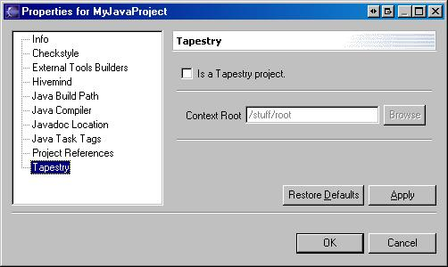
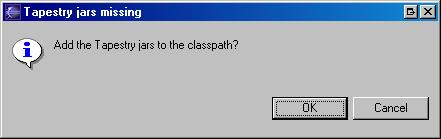

Here's how you add, remove, or modify the Tapestry Project Nature of an Eclipse project.
Described here is the process for adding the Tapestry nature to a Java project. I've added notes in the steps below for actions that can be used to remove or modify the nature of an existing Tapestry project
Select the project, right click and choose "Properties"
Select "Tapestry" from the list on the left to see the Tapestry project property page.
Note that in later builds of Spindle 3.1, an option is given here (not shown) to turn on/off the validation of the project web.xml file

Check the box marked "is a Tapestry project" to give the project the Tapestry nature.
Alternately, uncheck the box to remove the nature. This will also clean up any Tapestry specific markers and invalidate the project build state.
The button to choose the context folder will enable when the box is checked.

Click the button to open a folder chooser dialog. You can locate and choose the context folder here. (No image)
The folder you choose for the context folder must already exist. In Spindle 3.0 there is no way here to create a new folder.
Press "Apply" or "Done".
When finished the nature will be added and a project build will occur immediately.
If it is detected that the jars required to build a Tapestry project are missing (in other words the Tapestry distro jars and its dependencies) you might see this:

Answering "Yes" will cause the Tapestry Framework Library to be added to the project before the build.
If you don't want to use the Tapestry Framework Library (for example, you want to put the Tapestry jars directly in the WEB-INF/lib folder). Answer "No". The subsequent build will be broken until you actually add the jars to the classpath.
That's it. These are the steps needed to add, remove, or modify the Tapestry nature of an Eclipse project.